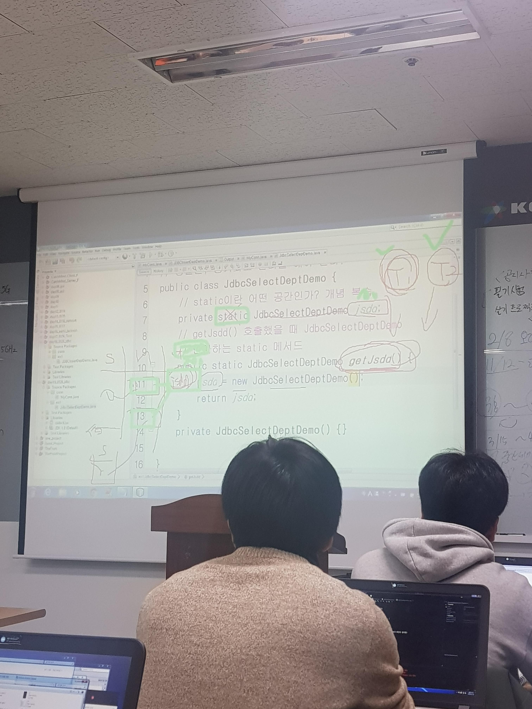
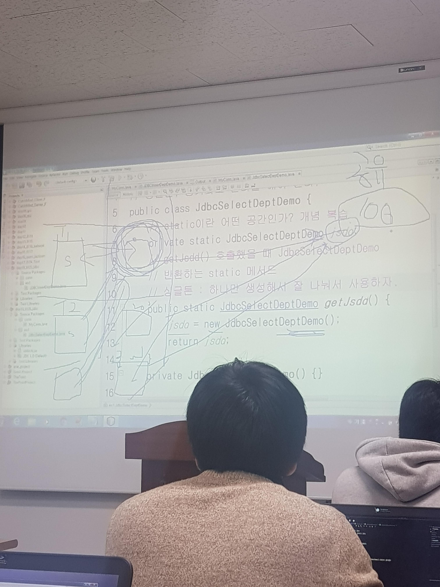
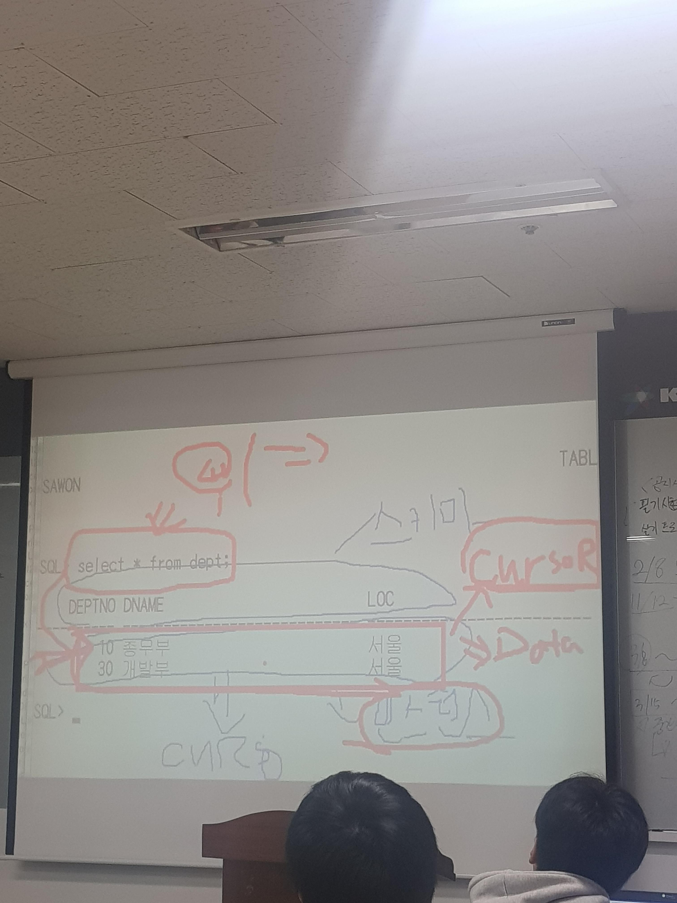
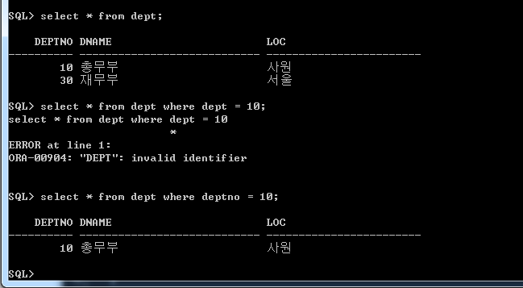
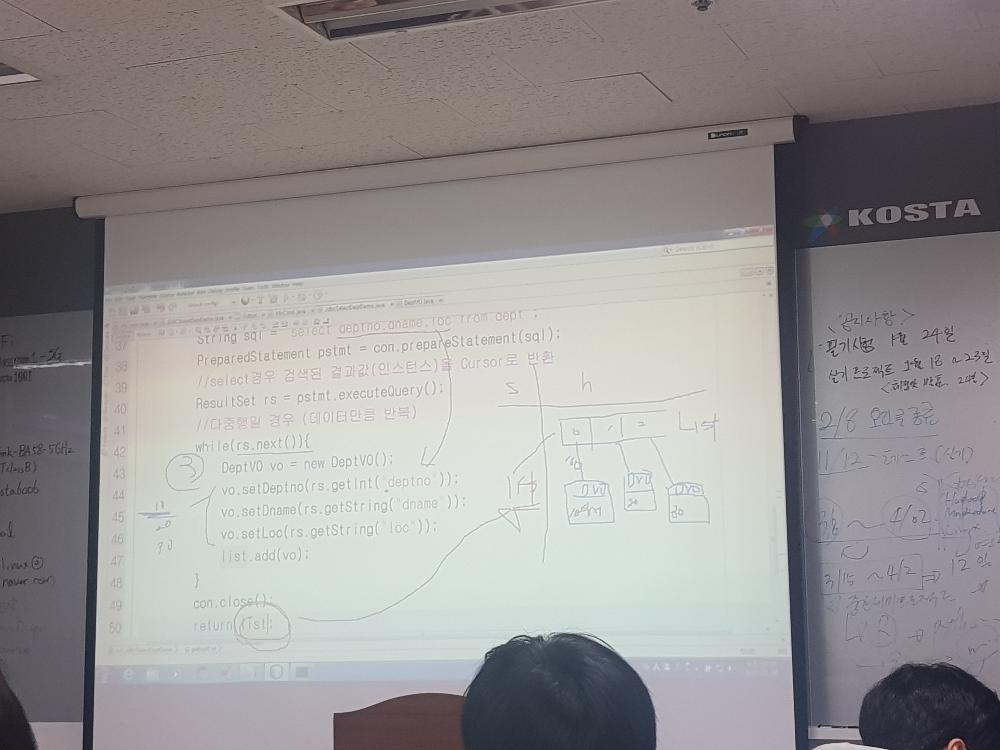

정리 : static이므로 하나만 존재하고 100번지든 200번지든 어디든 가지고 오더라도 static은 고유의 영역이므로 하나만 존재하고 전부 이걸 참조한다.


select의 경우 데이터가 결과물임.
결과물이 인스턴스임.
결과물의 주소를 커서
커서 - 내가 내린 쿼리의 결과에 따른 인스턴스의 주소.


사용코드
/*테이블명 gogek
gobun number(3)
goname varchar2(25)
gotel varchar2(34)
gojumin varchar2(14)
godam number(3)
pk : gobun
unique, notnull : jumin
foreign key godam -> sawon.sabun
*/
CREATE TABLE GOGEK(
gobun number(3),
goname varchar2(25),
gotel varchar2(34),
gojumin varchar2(14)constraint gogek_gojumin_nn NOT NULL,
godam number(3),
constraint gogek_gobun_pk primary key(gobun),
constraint gogek_gojumin_uq unique(gojumin),
constraint gogek_godam_fk foreign key (godam) references sawon(sabun)
);
delete from dept;
delete from sawon;
commit;
Insert Into Dept Values(10, '총무부','서울');
Insert Into Dept Values(20, '영업부','대전');
Insert Into Dept Values(30, '전산부','부산');
Insert Into Dept Values(40, '관리부', '광주');
Insert Into Dept Values(50, '개발부', '가산');
Insert Into sawon Values(1,'김길동',10,'회장',5000,'1980/01/01','남자',null);
Insert Into sawon Values(2,'한국남',20,'부장',3000,'1988/11/01', '남자',1);
Insert Into sawon Values(3,'이순신',20,'과장',3500,'1985/03/01','남자', 2);
Insert Into sawon Values(5,'이순라',20,'사원',1200,'1990/05/01','여자', 3);
Insert Into sawon Values(7,'놀기만',20,'과장',2300,'1996/06/01','여자', 2);
Insert Into sawon Values(11,'류별나',20,'과장',1600,'1989/12/01','여자', 2);
Insert Into sawon Values(14,'채시라',20,'사원',3400,'1993/10/01','여자', 3);
Insert Into sawon Values(17,'이성계',30,'부장',2803,'1984/05/01','남자', 1);
Insert Into sawon Values(13,'무궁화',10,'부장',3000,'1996/11/01','여자', 1);
Insert Into sawon Values(19,'임꺽정',20,'사원',2200,'1988/04/01','남자', 7);
Insert Into sawon Values(20,'깨똥이',10,'과장',4500,'1990/05/01','남자', 13);
Insert Into sawon Values(6,'공부만',30,'과장',4003,'1995/05/01','남자', 17);
Insert Into sawon Values(8,'채송화',30,'대리',1703,'1992/06/01','여자', 17);
Insert Into sawon Values(12,'류명한',10,'대리',1800,'1990/10/01','남자', 20);
Insert Into sawon Values(9,'무궁화',10,'사원',1100,'1984/08/01','여자', 12);
Insert Into sawon Values(4,'이미라',30,'대리',2503,'1983/04/01','여자', 17);
Insert Into sawon Values(10,'공부해',30,'사원',1303,'1988/11/01','남자', 4);
Insert Into sawon Values(15,'구하라',10,'사원',2000,'1991/04/01','여자', 12);
Insert Into sawon Values(16,'김유신',30,'사원',400,'1981/04/01','남자', 4);
Insert Into sawon Values(18,'강감찬',30,'사원',1003,'1986/07/01','남자', 4);
Insert Into sawon Values(21,'김민희',50,'부장',4500,'2000/05/01','여자', 1);
Insert Into sawon Values(22,'홍실이',50,'과장',3500,'2001/11/01','여자', 21);
Insert Into sawon Values(23,'개발이',50,'대리',2500,'2002/08/01','남자', 22);
Insert Into sawon Values(24,'감수정',50,'사원',2000,'2010/05/11','남자', 23);
insert into gogek values(1,'류민', '123-1234', '700113-1537915',3);
insert into gogek values(2,'강민', '343-1454', '690216-1627914',2);
insert into gogek values(3,'영희', '144-1655', '750320-2636215',null);
insert into gogek values(4,'철이', '673-1674', '770430-1234567',4);
insert into gogek values(5,'류완', '123-1674', '720521-1123675',3);
insert into gogek values(6,'캔디', '673-1764', '650725-2534566',null);
insert into gogek values(7,'똘이', '176-7677', '630608-1648614',7);
insert into gogek values(8,'쇠돌', '673-6774', '800804-1346574',9);
insert into gogek values(9,'홍이', '767-1234', '731225-1234689',13);
insert into gogek values(10,'안나','767-1677', '751015-2432168',4);
insert into gogek values(11,'요나','767-1677', '041010-4142355',24);
insert into gogek values(12,'인군','767-1677', '031015-3112163',24);
commit;
--alias
select saname as 사원이름 from sawon;
--select column
--as 사원이름 << 별칭을 만듬.
select saname 사원이름 from sawon;
select saname "사원 이름" from sawon;
--쌍따옴표 쓰는 이유 : 혹시나 스페이스 사용할 수 있어서.
--문자열 연결 연산자
select saname || '의 사원 번호는 ' || sabun || '입니다.'
from sawon;
--이렇게 쓰면 불편하다.
select saname || ' 의 급여는 '||sapay||' 입니다 이번달 보너스는'||sapay||'의 50%입니다.' as 테스트
from sawon;
---------------
select saname || '의 사원 번호는 ' || sabun || '입니다.' as sainfo
from sawon;
--이렇게 쓰면 편-안
--비교연산자
select saname as 이름, sapay/12 as 월급 from sawon;
select saname, sapay/2 * 100 as 보너스 from sawon;
---조건 : 10번부서만 적용을 해야겠다
select saname, deptno, sapay/2 * 100 as 보너스
from sawon
where deptno = 10;
-- 2000 ~ 3000사이의 급여를 받는 사원을 출력
--and 연산자 or연산자
select saname, sapay , deptno
from sawon
where sapay>=2000 and sapay <= 3000 and deptno = 10;
--부서번호가 10, 20부서만 출력하시오
SELECT saname, sapy, deptno
from sawon
where deptno = 10 or deptno = 20;
---in연산자 (or연산자가 더덕더덕)
--in연산자, or을 사용하는것보다 프로그래미잉 수월해진다
--not in() -> 필수적으로 이해해야 함
select saname, sapay, deptno
from sawon
where deptno in(10,20);
select saname, sapay, deptno
from sawon
where deptno not in(10,20);
--like 문자열 연산자
-- % 어떤 여러 문자열
-- _ 어떤 한 문자열
-- 예) 이름중에 "길"이 들어가는 사원을 찾고 싶다
select saname, sapay
from sawon
where saname like '%길%';
select saname
from sawon
where saname like '__이';
--dual table : 가상 테이블
--한 행으로 결과를 출력하기 위한 가상 테이블
--산술연산, 가상의 컬럼 등의 값을 한번에 출력하기 위한 목적으로 사용
select 100* 2 result
from sawon;
--100 * 2 -> 스키마가 되는 것. 24개가 출력.
select 100* 2 result
from sawon
where sabun = 1;
--이래도 되긴 함.근데 이건 잘못됨.
--근데 이건 결과가 24테이블이 나옴.
select 100 * 2 result
from dual;
--이러면 내가 원하는 값이 1개만 나옴.
select 100 * 2 result
from dual;
desc dual;
--sysdate 오늘 날짜를 출력하자.
select sysdate from dual;
desc dual;
select * from dual;
-- X값나옴. 아무의미없는 ROW값이 존재함.
--숫자함수
select -10, abs(-10) from dual;
select sin(10), cos(10), tan(10) from dual;
--반올림
select round(999.999) as 확인 from dual;
select round(999.999,0) from dual;
select round(999.999,2) from dual;
select round(999.999,-2) from dual;
select round(888.888,9) from dual;
--자리수를 지정한 버림
select trunc(888.999) from dual;
select trunc(888.999,0) from dual;
select trunc(888.999,2) from dual;
select trunc(888.999,-2) from dual;
--상한값(cell), 하한값(floor)
select ceil(10.001), floor(10.99) from dual;
--ceil 무조건올림
--floor 무조건내림
--나눈 나머지 값
select mod(10,2) from dual;
--문자함수
--length 문자열의 길이를 구하는 함수
select length('kostaBigdataStudy Oracle') from dual;
--lower upper : 소문자/대문자
select lower('kostaBigdataStudy Oracle') from dual;
--initcap() : 문자열의 첫번째 문자만 대문자로 변환
select initcap('kostaBigdataStudy Oracle') from dual;
select * from nis_database_parameters where parameter like '%charcterset%';
--AL32UTF8 : 한글 정렬 기능을 지원, 3바이트 공간을 차지함
select lengthb('kosta'), length('kosta') from dual;
--lengthb : 문자열의 바이트수를 변환
select lengthb('오라클'), length('오라클') from dual;
--문자열자르기 (trim), rtrin, ltrim
select trim(' kosta bigdata ' ), length( ' kosta bigdata ' ) ,length( trim (' kosta bigdata ' )) from dual;
--rtrim, ltrim으로 각각 잘라봅시다.
select length(rtrim(' kosta bigdata ')), length(ltrim(' kosta bigdata ')) from dual;
select trim('*' from '*****kosta bigdata******') from dual;
--instr(문자열,찾을문자열,검색시작,n번째)
--문자열 중에서 지정한 특정 문자가 포함된 위치를 반환하는 함수
select instr('kosta_kosta', 'k', 1,2) from dual;
select instr('kosta_kosta', 'k', -1,2) from dual;
select instr('kosta_kosta', 'k', 1,-2) from dual;
--substr(문자열, n부터 n개)
--오라클 인덱스는 1부터 시작*******
select substr('Welcome to Oracle', 3) from dual;
select substr('Welcome to Oracle', 5,3) from dual;
select substr('Welcome to Oracle', -3,3) from dual;
select substr('Welcome to Oracle', 3,3) from dual;
create table memphone(
num number(3) constraint memphone_num_pk primary key,
name varchar2(20),
pnum varchar2(25));
create sequence memphone_seq
increment by 1
start with 1;
insert into memphone values(memphone_seq.nextVal,'대신귀', '02)567-1267');
insert into memphone values(memphone_seq.nextVal,'여운알', '032)567-1267');
insert into memphone values(memphone_seq.nextVal,'파카를', '051)567-1267');
insert into memphone values(memphone_seq.nextVal,'드리겠', '053)567-1267');
insert into memphone values(memphone_seq.nextVal,'습니다', '02)567-1267');
--memberphone 테이블에서 사용자의 전화번호중에
--사용자, 국번, 전화번호 형태로 출력하시오.
select name as 사용자
from memphone;
select
substr(pnum,1,1) as 전화번호
from memphone;
---instr('kosta_kosta', 'k', 1,2)
select instr(pnum,')',1,1) as 전화번호
from memphone;
--------------------
select name,
substr(pnum,1,instr(pnum,')',1,1)-1),
substr(pnum, (instr(pnum,')',1,1)+1),10)
from memphone;
--instr(문자열,찾을문자열,검색시작,n번째)
--문자열 중에서 지정한 특정 문자가 포함된 위치를 반환하는 함수
select instr('kosta_kosta', 'k', 1,2) from dual;
select instr('kosta_kosta', 'k', -1,2) from dual;
select instr('kosta_kosta', 'k', 1,-2) from dual;
--문자채우기 함수
select rpad(saname,8,'★'), lpad(saname,8,'★') from sawon;
--강길동★★ ★★강길동
--select gojumin from gogek;
--이거연습문제. 주민뒷자리 가리는거
--decode함수 : oracle에서만 제공하는 SQL함수
--decode(기준값,조건1,결과1,조건2,결과2,......그외) "컬럼"
--case 함수 : decode의 기능을 확장한 함수
/*
case [기준값] when 기준값 조건값1 then 결과1
when 기준값 조건값2 then 결과2
else 그 외의 결과값
end "컬럼명"
*/
select saname, deptno,
case when deptno = 50 then '개발부'
when deptno = 20 then '영업부'
when deptno = 30 then '전산부'
else '총관리부'
end "임시부서명"
from sawon order by 2 asc;
--차이 : decode 함수는 기준값을 비교하는 column값이 "-"비교를 통해서만 조건과 일치
--case : 산술, 논리, 관계 다양한 비교가 가능하다.
select deptno, dname from dept;
--총무부의 사원들이 총무부 -> 총관리부
--10번부서일 경우에 view가 총무부가 아닌 총관리부로 보여져야 할 때
select saname, deptno, decode(deptno,10,'총관리부',20,'영업부',30,'전산부',40,'관리부',50,'전산부','총관리부')
"임시부서명"
from sawon
order by 2 asc;
-- order by asc : 오름차순, desc 내림차순.
--deptno를 기준으로 오름차순한거
select * from gogek;
select * from gogek where godam is null;
select * from gogek where godam is not null;
commit;
---------------------------------------------------------------------------
select '부서번호'||deptno as deptno
, saname||'님의 급여는'||sapay||'입니다.' as message
from sawon
where sapay>=2000 and sapay<=3000;
-------------------------------------
select saname as 사원명, sapay as 급여, round(sapay/12,-1) as 월급, sapay/ 1000 * 33*10000 as 세금
from sawon;
select round(999.999,0) from dual;
select (RPAD(gojumin,7,'*') ||'*******')
from gogek;
-------------------------
select goname,gojumin,
case when substr(gojumin, (instr(gojumin,'-',1,1)+1),1) =1 then '남자'
else '여자'
end "성별"
from gogek;
----------------
select saname, deptno,
case when deptno = 50 then '개발부'
when deptno = 20 then '영업부'
when deptno = 30 then '전산부'
else '총관리부'
end "임시부서명"
from sawon order by 2 asc;
-----------------------------
select saname, sapay,
case when sapay < 1000 then sapay*0.1
when sapay >=1000 and sapay < 2000 then sapay*0.15
else sapay*0.2
end "보너스"
from sawon;